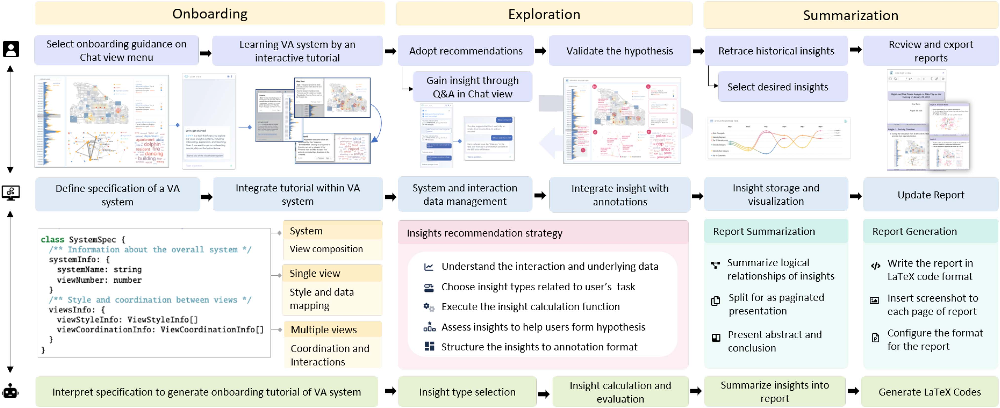
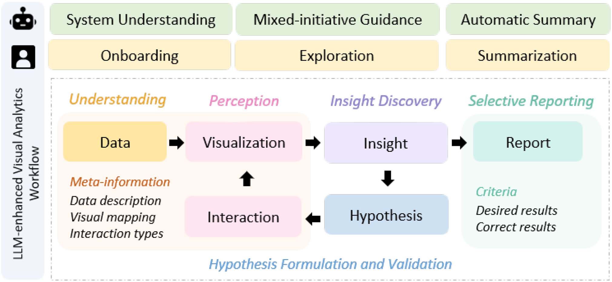
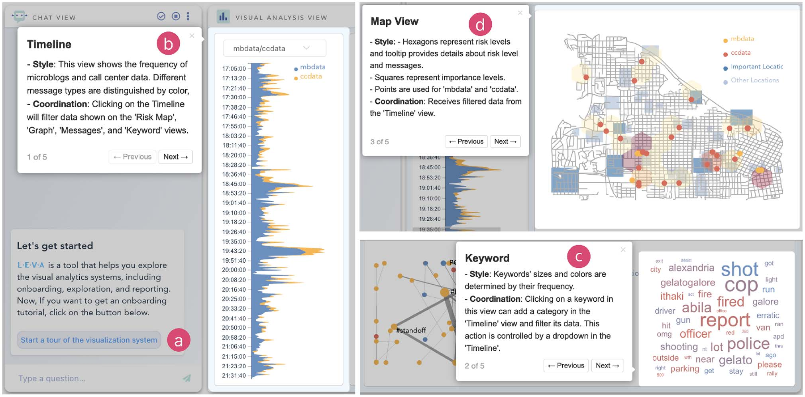
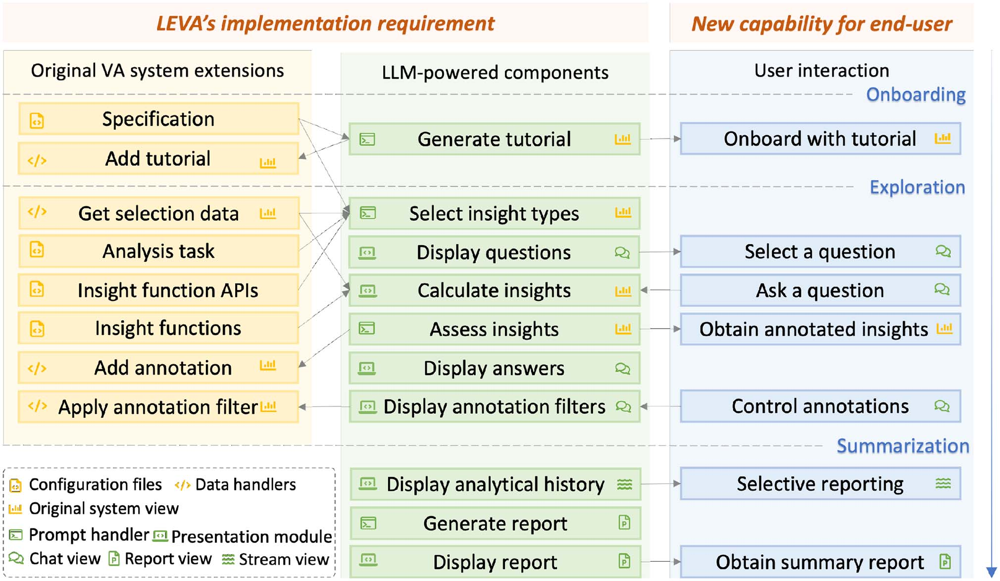
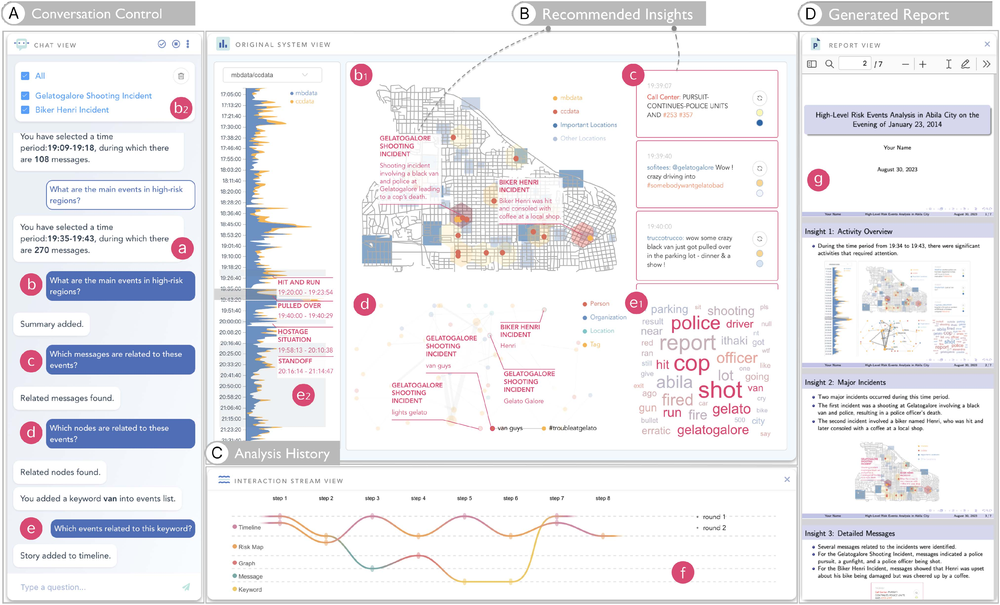
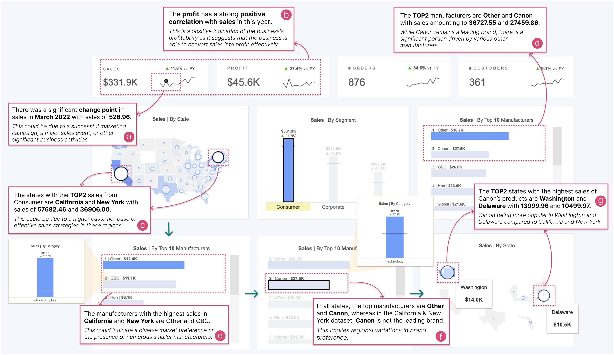
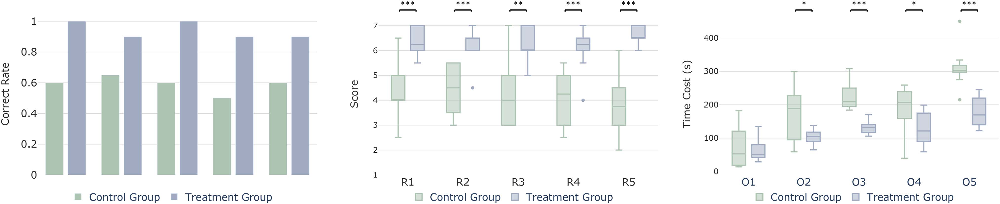
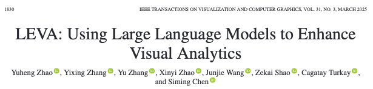

Pico selecionado
O usuário escolhe o intervalo com maior atividade.
Using Large Language Models to Enhance Visual Analytics
Yuheng Zhao et al. · DOI 10.1109/TVCG.2024.3368060
Caracterização das dificuldades do fluxo de visual analytics.
Arquitetura, formalização de insights e integração ao sistema.
Aplicações em eventos multifacetados e dados tabulares.
Desenho do estudo, métricas e resultados quantitativos.
Pontos fortes, limitações e parecer crítico do grupo.
Formula hipóteses, reconhece relevância e decide quais caminhos analíticos devem ser examinados.
Externaliza padrões, oferece mecanismos de interação e preserva o contexto dos dados.
Executam cálculos, filtragem e recomendação para reduzir o espaço de busca analítico.
Dados, marcas, canais e coordenações entre vistas não são autoexplicativos. Baixa literacia visual amplia o problema.
Há muitos caminhos possíveis, tarefas repetitivas e dependência de conhecimento de domínio para reconhecer bons insights.
Interações se acumulam, descobertas se perdem e transformar o percurso em narrativa exige esforço adicional.
A literatura apoia etapas isoladas, mas não fornece uma estratégia geral para o fluxo completo.
Uma representação comum permite ao LLM compreender o sistema.
Funções analíticas mantêm cálculos quantitativos verificáveis fora do LLM; análises textuais podem permanecer no modelo.
Anotações visuais devolvem resultados ao lugar onde podem ser verificados.
Proveniência conecta exploração e relato final.
Tours interativos superam descrições passivas, mas demandam autoria específica.
Recomendação de interação é útil, porém requer logs e pode ser opaca.
Sistemas guardam caminhos analíticos, mas a seleção e a síntese continuam manuais.
Modelos já geram gráficos e código; aqui passam a operar dentro de um sistema VA.
Representar dados, codificação e coordenação de forma legível pelo modelo.
Oferecer direção sem converter exploração aberta em uma sequência rígida.
Preservar a trajetória sem transformar cada clique em conteúdo do relatório.
Entrada: descrição formal do sistema e de seu estado.
Processamento: seleção de funções e avaliação de resultados.
Saída: tutorial, anotação e relatório sujeitos à decisão humana.
Explicar dados, marcas, canais e mapeamentos.
Mostrar como uma ação modifica outras vistas.
Automatizar análises sobre diferentes tipos de dados.
Apoiar formulação e validação em estados atualizados.
Selecionar, organizar e relatar trajetórias analíticas.
C1 → R1–R2 · C2 → R3–R4 · C3 → R5


Interpreta estado, seleciona funções, formula perguntas e explica resultados.
Funções estatísticas e regras calculam resultados verificáveis.
Vistas mostram contexto, recebem anotações e capturam novas seleções.
O analista aceita, rejeita, compara e inicia a próxima rodada.
Pares chave–valor podem descrever também vistas customizadas.
Sistema: nome e composição geral.
Vista: dados, marcas, canais, camadas e tooltip.
Coordenação: origem, destino, evento e efeito.
Ordem: visão geral antes dos detalhes.

O Chat view inicia a sequência.
O tour explica mbdata e ccdata.
Mostra a coordenação keyword → timeline.
Explica a cor dos hexágonos de risco.
Tipo determina a operação analítica, como tendência, outlier ou correlação.
Parâmetros especificam as entradas exigidas pela função selecionada.
Sujeito identifica o subconjunto de dados no qual o padrão foi observado.
Score ordena os insights segundo significância, impacto e relevância.
Um fator explica grande parcela do total.
O maior valor sobressai em relação aos demais.
Os dois primeiros valores se destacam.
O menor valor se separa do conjunto.
Os valores apresentam distribuição aproximadamente uniforme.
O comportamento da série se altera.
Uma observação diverge do padrão da série.
Um padrão periódico se repete no tempo.
Há direção persistente de crescimento ou queda.
Pontos formam grupos em duas medidas.
Dois subespaços exibem padrões relacionados.
Duas medidas variam de forma associada.
Mensagens ou eventos são sintetizados.
Entidades centrais de uma rede são identificadas.
Relações importantes da rede são identificadas.
12 tipos vêm da especificação do QuickInsights; 3 tipos foram acrescentados pelos autores para texto e grafos.
Em alguns tipos, usa-se 1 − p; a métrica pode variar conforme o insight.
Cobertura, consequência, urgência e semântica.
Alinhamento entre insight e tarefa declarada.
Os autores reconhecem a volatilidade do valor-p e sugerem tamanho de efeito, Cohen’s d, odds ratio, R², BLEU ou ROUGE quando mais adequados.
Duas etapas de diálogo organizam três operações: selecionar, calcular e pontuar. O LLM seleciona e avalia; funções externas realizam os cálculos quantitativos.
A descrição textual e a anotação visual cumprem funções complementares.
Selecionar elementos visuais correspondentes.
Alterar estilo e adicionar explicação próxima ao dado.
Propagar insights que atravessam vistas coordenadas.
Permitir filtrar ou limpar anotações.
| Passo 1 | Passo 2 | Passo 3 | Passo 4 | Passo 5 | Passo 6 | |
|---|---|---|---|---|---|---|
| Rodada 1 | Vista focal | Insight | Interação | — | — | — |
| Rodada 2 | — | Vista focal | Insight | Interação | Insight | — |
Localiza o passo no sistema de visual analytics.
Registra o conteúdo analítico e a operação realizada.
Preserva a evidência visual associada ao passo.

Especificação e tarefa analítica.
Catálogo de funções com nome e descrição.
Handlers para capturar seleções e estados.
Handlers para tutorial, anotação e filtros.

A interface separa o que é dito, o que é mostrado e o que é lembrado.
Detectar eventos de risco na noite de 23 de janeiro de 2014 usando mensagens e chamadas de emergência.
Timeline como ponto principal de interação.
Mapa com distribuição e nível de risco.
Grafo de pessoas, locais e relações.
Mensagens e palavras-chave ligadas ao período.
O usuário escolhe o intervalo com maior atividade.
LEVA resume atropelamento e tiroteio na loja.
Grafo e mensagens apontam os “van guys”.
Hit and run, abordagem, refém e confronto.

Nove vistas combinam mapa, barras e séries temporais para analisar vendas por segmento, categoria, fabricante, cliente e estado.
Segmento com maior valor é selecionado.
Mudança significativa aparece na série de vendas.
Função detecta forte correlação positiva.
Estados revelam preferências regionais distintas.
A gramática do sistema pode incorporar diferentes vistas e coordenações.
Tipos e funções podem ser especializados para outras tarefas.
A preservação de rodadas pode sustentar relatórios em outros sistemas.
O framework não depende conceitualmente de um único modelo.
Sistema VAST original, sem assistência do LEVA.
Mesmo sistema com onboarding, recomendação e relatório.
20 participantes, de 19 a 25 anos.
Idade média 22,37; desvio padrão 1,79.
Computação, dados, matemática e negócios.
Quatro participantes eram novatos em VA.
Respostas objetivas podiam receber 0, 0,5 ou 1. Questões subjetivas usaram escala Likert de 7 pontos.

Resumo longo de eventos; ainda economizou tempo total.
Busca de nós relevantes no grafo.
Resumo omitiu o ator principal; free ask recuperou a informação.
evidência estatística
evidência mais forte
evidência muito forte
Os autores relatam normalidade para tempos de resposta e escores.
Com exceção de O1, o grupo LEVA respondeu em menos tempo: p < 0,05.
Facilidade e qualidade percebidas do relatório foram maiores com LEVA: p < 0,001.
Destacar termos e usar setas para tornar coordenações mais intuitivas.
Adicionar métodos e pontos de partida específicos do domínio.
Remover ou fundir passos antes de gerar a narrativa.
Transformar capacidades em toolkit ou plug-ins reutilizáveis.
Escopo coerente: onboarding, exploração e sumarização formam um único fluxo.
Arquitetura híbrida: LLM interpreta; funções verificáveis calculam.
Integração visual: anotações ligam linguagem e evidência.
Rastreabilidade: desafios, requisitos, componentes e perguntas se correspondem.
Reflexividade: a discussão reconhece erro, latência, dependência e custo.
Baixo poder, estimativas instáveis e nenhuma análise robusta de subgrupos.
Usuários jovens, tarefas curtas e apenas o cenário VAST no experimento.
Pouca ênfase em efeito, intervalo de confiança e múltiplas comparações.
Versão, custo e variabilidade dificultam reprodução longitudinal.
Boas sugestões podem ocultar caminhos que o sistema não recomenda.
Especificações, handlers, funções e prompts precisam ser adaptados.
LEVA integra modelos de linguagem ao fluxo de visual analytics sem substituir funções verificáveis nem o julgamento do analista.
O modelo amplia a interface sem retirar o analista do ciclo.
A arquitetura separa linguagem, cálculo, evidência e decisão.
Os resultados são consistentes, mas ainda iniciais.
Próximo passo: múltiplos sistemas, domínios, modelos e tarefas longas.
Obrigado.

Acessar no IEEE Xplore ↗